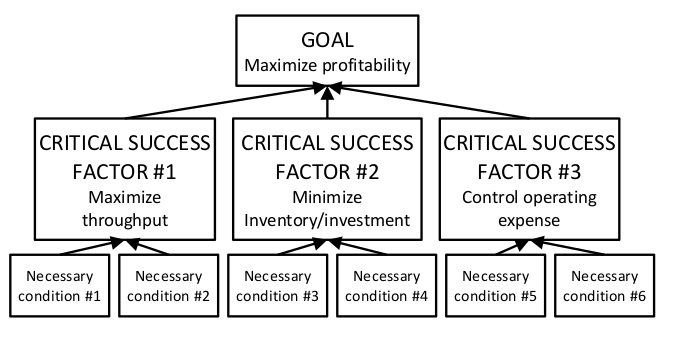

критический фактор успеха (critical success factor, CSF, КФУ) - требования высокого уровня или необходимые условия, которые должны быть выполнены для обеспечения достижения цели системы.
Использование: CSF представляют собой конечные результаты, их очень мало (возможно, не более трех-пяти), которые являются высокоуровневыми с точки зрения всей системы. Каждый CSF имеет необходимые условия, которые являются предпосылками для его выполнения. Единственное реальное отличие CSF от необходимых условий - это их близость к достижению цели и степень их специфичности.
CSF представляют собой второй уровень (ниже цели системы) карты промежуточных целей, используемой для установления эталона успеха системы для разработки стратегии или для решения проблем на системном уровне.
Иллюстрация:

Син: карта промежуточных целей, КФУ
#мп
Примечание АВ: термин заимствованный из стратегического менеджмента, исходит из целеполагания. Это второй уровень - “я хочу достигнуть этой цели”. Косвенно используется в дереве стратегии и тактики в предпосылках необходимости или параллельных посылках. которые критически важны для достижения цели.
Синоним: critical success factor